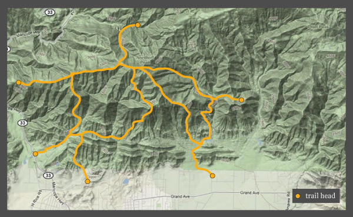
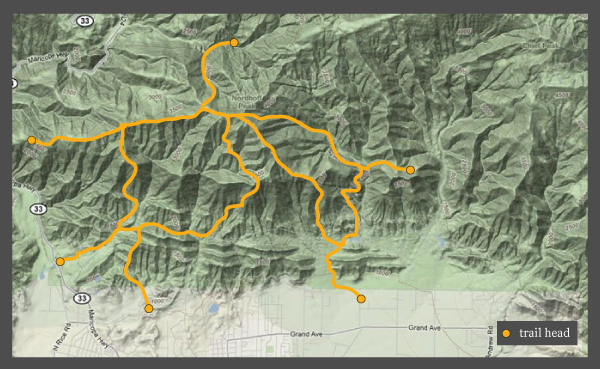

Northridge Loop
 
Skill Level
Surface
Notable Features
Final Thoughts
Comments
Max Smith:
Great review! Awesome spot on the West side of the loop.Had a great time!
your complete biking trail resource
Ojai Trails

Great review! Awesome spot on the West side of the loop.Had a great time!
submitted on 06/26/14
We came across this trial last year but never got time to explore it until last month.
submitted on 04/30/14
I went with my friend to the Copper Canyon Loop, or the "coop" as they called it. It had poorly marked trails and lack of trail upkeep.